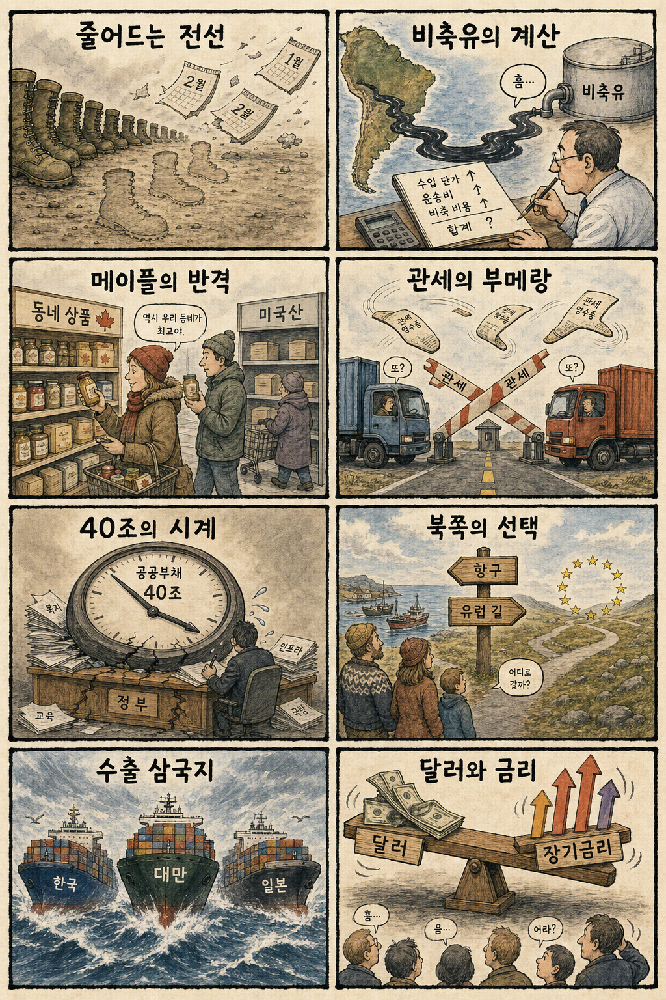
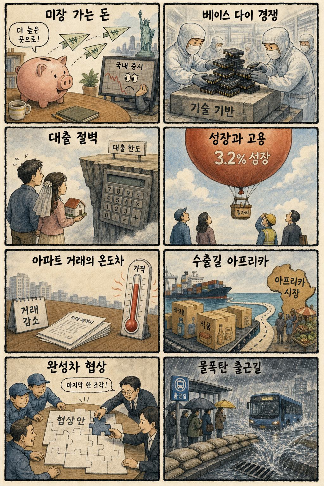

01
크라우드스트라이크 · 228.49→218.40달러 · -4.42%
내용요약 시가 대비 4.42% 하락하며 전일 급등분 일부를 되돌렸습니다.
예상여파 국내 보안 소프트웨어주의 단기 심리에 부담이며 변동성 확대를 경계합니다.
MORNING_BRIEFING_20260831
작성 시각: 2026-08-31 06:39 KST · 직전 미국 정규장과 2026-08-31 KST 당일 공개 기사 기준
직전 미국 정규장인 8월 28일에는 다우 -0.02%, S&P 500 -0.25%, 나스닥 -0.52%로 동반 약세였습니다. 엔비디아는 시가 대비 -4.30%, 크라우드스트라이크 -4.42%, 마벨 -3.86%로 AI 하드웨어·보안주가 밀린 반면 아마존 +3.14%, 알파벳 +1.71%, 마이크로소프트 +1.62%는 방어했습니다. 오늘 국내 증시는 대형 반도체의 약한 출발 가능성과 원화·외국인 수급을 함께 확인해야 합니다.
| 지수 | 종가 | 등락률 | 한국 증시 시사점 |
|---|---|---|---|
| 다우존스 | 53,559.99 | -0.02% | 경기주 중립 |
| S&P 500 | 7,711.76 | -0.25% | 기술주 차익실현 경계 |
| 나스닥 종합 | 26,402.42 | -0.52% | 기술주 차익실현 경계 |
엔비디아와 AI 하드웨어 약세가 국내 반도체 시초가에 부담입니다.
대형 반도체 급락 뒤 기술적 반등보다 외국인 수급 확인이 우선입니다.
미국·캐나다 보복관세가 자동차·부품 공급망의 새 변수입니다.
30건 보정 표본과 수급·컨센서스 문턱을 검증한 후보가 없습니다.
8월 30일 보고서는 검증 문턱을 통과한 후보가 없어 공식 추천을 내지 않았습니다. 게시 당시 판단은 그대로 유지되며 사후 종목을 추가하지 않습니다.
| 시장 | 종가 | 등락률 | 해석 |
|---|---|---|---|
| KOSPI | 6,788.88 | -1.79% | 28일 시가 대비 -0.84% |
| KOSDAQ | 838.41 | +0.09% | 28일 시가 대비 +0.38% |
| 다우존스 | 53,559.99 | -0.02% | 보합 |
| S&P 500 | 7,711.76 | -0.25% | 기술주 약세 |
| 나스닥 종합 | 26,402.42 | -0.52% | 기술주 약세 |
아마존이 시가 대비 +3.14%로 강했습니다.
알파벳 +1.71%, 마이크로소프트 +1.62%였습니다.
엔비디아 -4.30%, 마벨 -3.86%, 어플라이드머티리얼즈 -3.41%였습니다.
크라우드스트라이크가 시가 대비 -4.42%로 밀렸습니다.
내용요약 시가 대비 4.42% 하락하며 전일 급등분 일부를 되돌렸습니다.
예상여파 국내 보안 소프트웨어주의 단기 심리에 부담이며 변동성 확대를 경계합니다.
내용요약 AI 반도체 차익실현 속 시가 대비 4.30% 하락했습니다.
예상여파 국내 HBM 대형주의 월요일 시초가에 부담이 될 수 있어 갭 하락 뒤 수급 확인이 우선입니다.
내용요약 AI 네트워크 반도체가 시가 대비 3.86% 하락했습니다.
예상여파 AI 인프라 내에서도 네트워크·맞춤형 칩 종목의 고평가 부담이 부각될 수 있습니다.
내용요약 대형 기술주 약세 속에서도 시가 대비 3.14% 상승했습니다.
예상여파 클라우드와 소비 플랫폼의 상대강도는 기술주 내부 순환매 가능성을 보여줍니다.
내용요약 AI 소프트웨어·클라우드 선호로 시가 대비 1.62% 상승했습니다.
예상여파 하드웨어 약세와 소프트웨어 강세의 차별화가 국내 관련주에도 이어질 수 있습니다.
오늘은 나스닥 -0.52%와 엔비디아 -4.30%가 8월 28일 KOSPI에서 급락한 대형 반도체에 추가 부담을 줄 수 있습니다. 반면 아마존·알파벳·마이크로소프트의 상대강도는 AI 소프트웨어·플랫폼의 선택적 방어 가능성을 보여줍니다. 직전 거래일 KOSPI는 시가 대비 -0.84%였고 KOSDAQ은 +0.38%로 차별화됐습니다. 개장 초 반도체 갭과 원화 방향, 외국인 선물 수급을 확인하기 전 추격매수를 피합니다.
오늘은 추천 없음 — 현금 관망
전일까지의 외국인·기관 수급, 컨센서스 변화, 30건 이상 유사 조건 확률 보정, 예상 손익비 1.5 이상을 동시에 검증한 종목이 없습니다. 종합점수와 상승확률을 임의로 만들지 않습니다.
관심 연결종목 AI 소프트웨어, 원전·전력, 자동차 부품은 뉴스 연결 관찰 대상일 뿐 매수 추천이 아닙니다. 개장 초 급등락 종목은 추격매수 금지입니다.
엔비디아 약세 뒤 삼성전자·SK하이닉스의 갭과 외국인 선물을 봅니다.
반도체 호조의 지속성과 수출 품목 다변화를 점검합니다.
잠정합의안 가결 여부와 생산 일정 영향을 확인합니다.
충청권 최대 250㎜ 예보에 침수·산사태·교통 통제를 우선 확인합니다.
핵심 요약: AI 경쟁은 데이터센터 전력원, 오픈소스 플랫폼, 특화 검색 투자로 확장됐습니다. 반도체에서는 HBM 베이스 다이와 2나노 공정의 결합이 차세대 AI칩 수주 경쟁의 핵심으로 떠올랐습니다.
내용요약 AI 데이터센터의 전력 수요가 급증하자 아일랜드가 장기간 금기시해 온 원전 도입 가능성을 다시 검토한다는 분석입니다.
예상여파 데이터센터 입지 경쟁이 서버·반도체를 넘어 전력원 확보 경쟁으로 이동하며 원전·전력망·냉각 인프라 투자가 함께 부각될 수 있습니다.
내용요약 엔비디아의 허깅페이스 인수가 오픈소스 AI 생태계와 개발자 플랫폼 주도권에 갖는 의미를 짚은 당일 분석입니다.
예상여파 AI칩 기업이 모델·데이터·개발도구까지 통합하면 생태계 잠금 효과가 커지는 한편 개방형 AI의 독립성 논쟁도 확대될 수 있습니다.
내용요약 AI 검색 서비스 라이너가 정확도 경쟁력을 앞세워 500억원 규모 투자를 유치했다는 보도입니다.
예상여파 국내 생성형 AI 스타트업의 해외 확장과 특화 검색 경쟁에 자금이 유입되지만 이용자 유지율과 수익모델 검증이 다음 관문입니다.
내용요약 HBM 성능을 좌우하는 베이스 다이를 둘러싸고 메모리 기업과 AI칩 기업의 설계 주도권 경쟁이 커진다는 보도입니다.
예상여파 맞춤형 HBM과 파운드리·패키징 결합이 강화되며 공급사 선정, 수율, 고객사 협상력이 메모리 수익성을 좌우할 수 있습니다.
내용요약 삼성전자가 2나노 공정과 HBM을 묶어 AI칩 고객을 선점하려는 전략을 추진한다는 보도입니다.
예상여파 파운드리와 메모리의 통합 제안은 턴키 수주에 유리하지만 공정 안정성과 HBM 인증 일정이 실제 성과를 가를 수 있습니다.
핵심 요약: 러시아의 병력 손실이 전쟁 지속 능력의 변수로 떠오른 가운데 미국은 베네수엘라산 원유로 전략비축유 보충을 추진하고 있습니다. 미국·캐나다 관세 충돌과 미국 공공부채 40조달러 돌파는 공급망·금리 변동성을 키웁니다.
내용요약 러시아군 전사자 증가로 매달 병력 규모가 약 6000명씩 순감한다는 추산을 다룬 보도입니다.
예상여파 병력 보충 압력이 커지면 추가 동원과 전선 운용, 휴전 협상력에 영향을 주고 유럽 안보 불확실성이 길어질 수 있습니다.
내용요약 미국이 베네수엘라산 석유를 활용해 전략비축유 보충을 곧 시작할 것이라는 발언을 다룬 보도입니다.
예상여파 실제 조달이 확대되면 중질유 수급과 정제마진, 국제유가에 영향을 줄 수 있으나 제재·계약 조건이 변수입니다.
내용요약 캐나다에서 미국 상품을 피하고 자국산을 선택하려는 소비자 운동이 격화된다는 현지 보도입니다.
예상여파 관세 갈등이 소비 행동으로 번지면 미국 브랜드 매출과 북미 유통망, 양국 정치 협상 비용이 함께 커질 수 있습니다.
내용요약 미국과 캐나다가 보복 관세 분쟁에 들어가면서 북미 공급망의 비용과 통관 불확실성이 커졌다는 보도입니다.
예상여파 자동차·부품·원자재처럼 국경을 반복 통과하는 산업의 비용 상승과 생산 재배치 압력이 커질 수 있습니다.
내용요약 미국 공공부채가 40조달러를 넘어선 가운데 재무장관의 G20 외교가 시험대에 올랐다는 보도입니다.
예상여파 국채 발행 부담과 장기금리 상승 우려는 달러와 글로벌 자금조달 비용, 신흥국 환율 변동성을 높일 수 있습니다.

핵심 요약: 개인자금의 미국 주식 이동과 반도체 중심 성장의 낮은 고용 파급력이 체감경기의 간극을 보여줍니다. 주담대 부담·서울 아파트 거래 감소와 현대차 임협 투표를 함께 보며, 오늘은 충청권 최대 250㎜ 집중호우에 우선 대비해야 합니다.
내용요약 원화 흐름과 대형 반도체주의 박스권 속에서 개인 자금이 미국 주식으로 이동하고 있다는 보도입니다.
예상여파 국내 증시의 개인 수급이 약해질 수 있고 환율 변동이 해외투자 성과를 좌우해 대형주의 외국인 수급 의존도가 커질 수 있습니다.
내용요약 주택담보대출 공급이 줄고 금리가 오르면서 실수요자의 자금 조달 부담이 커졌다는 보도입니다.
예상여파 주택 거래 둔화와 잔금 리스크가 확대될 수 있어 가계 현금흐름과 금융권 자산건전성 점검이 중요해집니다.
내용요약 경제성장률 전망과 달리 신규 일자리는 11만명 수준에 그쳐 반도체 중심 성장의 고용 파급력이 약하다는 분석입니다.
예상여파 체감경기 회복이 지연되고 서비스·중소기업 고용 보완책에 대한 정책 요구가 커질 수 있습니다.
내용요약 7월 서울 아파트 거래량이 15% 감소했지만 일부 가격은 신고가를 기록했다는 보도입니다.
예상여파 거래 위축과 가격 강세가 공존하면 실수요자의 판단이 어려워지고 지역·가격대별 양극화가 심해질 수 있습니다.
내용요약 현대차 노사가 오늘 임금협상 잠정합의안 찬반투표를 진행하며 완성차 5사 타결 여부가 결정된다는 보도입니다.
예상여파 가결되면 생산 차질 우려가 낮아지지만 부결 시 추가 교섭과 공급망 일정 변동 가능성이 남습니다.
